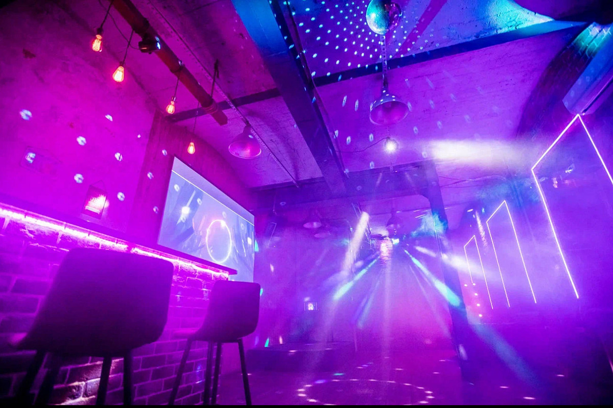
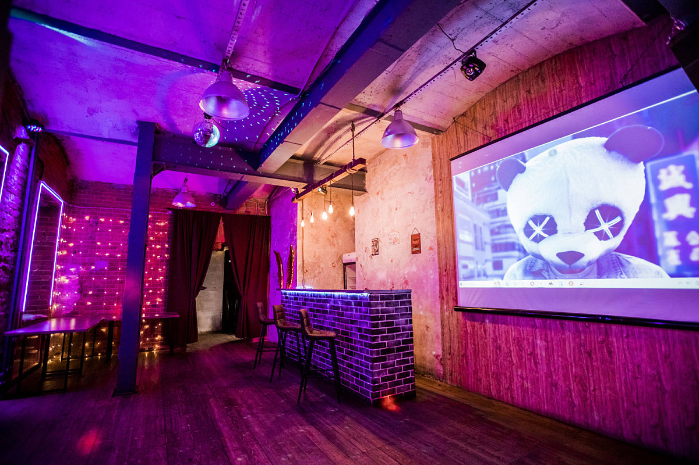

Состав музыкантов уточняется
Один вечер.
Своя компания.
Встречаемся в ОПЕРЕ — кирпичном лофте со сценой и барной стойкой на «Красном Октябре».
с человека · ориентир за 8 часов


На нашей сцене
В своём ритме.
Знакомимся, устраиваемся, настраиваемся на вечер.
Время и программа будут объявлены после подтверждения.
Точное время начала и окончания уточняется.
Прикинем расходы.
Ориентир организатора — с человека. Ниже — отдельный сценарный расчёт, а не подтверждённый счёт.
Прайс из объявления, проверенного 15.11.2026: пн–чт 2 000 ₽/ч, пт 3 900 ₽/ч (от 5 ч), сб 5 400 ₽/ч (от 6 ч), вс 2 900 ₽/ч. На декабрь цены уточняются. Нули в полях еды и напитков означают, что эти расходы ещё не внесены, а не включены в аренду.
Калькулятор заказа пиццы ↗Сцена, звук и место для всех.
95 м² · до 40 гостей · банкетная посадка до 32 человек.
Оборудование и обстановка
- Колонки JBL EON 615 — 2 шт., микшерный пульт Yamaha
- Проектор BenQ + экран 3 × 2 м
- Светомузыка, диско-шар, прожекторы, лазерная установка, декоративный свет
- Сцена, барная стойка 3 м, 3 барных стула
- 5 чиллаут-зон на подоконниках, 3 стола, 15 раскладных стульев, кожаный диван «Честер»
- Гримёрное зеркало, холодильник, чайник, СВЧ, кондиционер
- Свободный цвет неоновой подсветки
Доплаты
- Микрофон — 1 000 ₽ за мероприятие
- Генератор дыма — 1 500 ₽ за мероприятие
- Посуда — 50 ₽ за любой предмет
- Фуршет с холодными и горячими блюдами — от 2 500 ₽/чел.
- Диджей — 2 000 ₽/час, бармен — 2 000 ₽/час
Условия площадки и оговорки по стоимости
- Пт — 3 900 ₽/час при аренде не менее 5 часов
- Сб — 5 400 ₽/час при аренде не менее 6 часов
- Уборка 2 500 ₽ — отдельно
- Ночь 00:00–08:00 считается по цене предыдущего дня
- Тренинги и мастер-классы: будни до 18:00 — 1 000 ₽/час
- Скидка 10% на аренду при заказе своего кейтеринга
- Возврат оплаты при отмене не менее чем за 14 полных дней, иначе удерживается
- Нет ограничений по шуму, нет пробкового сбора
- Цены и условия на декабрь — уточнять у менеджера (повторено в описании трижды)
- Цены: шапка обещает диапазон 2 500–10 500 ₽/час, а опубликованные тарифы — 2 000 / 3 900 / 5 400 / 2 900 ₽/час; откуда верхняя граница 10 500, не сказано
- Цены на декабрь прямо не зафиксированы — «уточняйте у менеджера», то есть опубликованный прайс может не действовать
- Уборка 2 500 ₽ не входит в аренду и добавляется отдельной строкой
- Посуда 50 ₽ за предмет — при большой компании сумма быстро растёт, но она не входит в аренду
- Полной сметы площадка не публикует: кейтеринг, персонал и оборудование считаются отдельно
Арт-кластер «Красный Октябрь».
Площадка указывает метро «Кропоткинская» или «Полянка». Точный пеший маршрут до входа проверяйте на карте.
Ранее рассчитанный путь от работы (1-й Земельный переулок, 1) — около 42 минут на общественном транспорте. Это исторический ориентир, не прогноз на дату мероприятия.
Маршрут от работы ↗Увидимся в ОПЕРЕ.
· / чел.
Ссылка подтверждения участия пока не добавлена. Запись будет отдельно в Telegram.